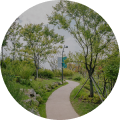

서울식물원의 조성
서울식물원에 오신 여러분을 환영합니다.
가드닝 문화

정원 가꾸기, 도시농업 같은 가드닝 문화를 널리 퍼트려 시민 삶을 푸르고 풍요롭게 만듭니다.
녹색도시의 미래
서울식물원은 백년을 내다보는 지속가능성의 원칙 아래 운영됩니다.서울식물원이 곧 녹색도시 서울의 미래입니다.
도심 속의 녹색명소
시민에게 식물이 주는 교육문화적 가치뿐 아니라 쾌적한 휴식과 여가공간을 제공합니다.
서울식물원에 오신 여러분을 환영합니다.
정원 가꾸기, 도시농업 같은 가드닝 문화를 널리 퍼트려 시민 삶을 푸르고 풍요롭게 만듭니다.
서울식물원은 백년을 내다보는 지속가능성의 원칙 아래 운영됩니다.서울식물원이 곧 녹색도시 서울의 미래입니다.
시민에게 식물이 주는 교육문화적 가치뿐 아니라 쾌적한 휴식과 여가공간을 제공합니다.
서울식물원에 오신 여러분을 환영합니다.
주제원(주제정원, 온실)
평시(3월~10월)
09:30~18:00 (매표 마감 17:00)
동절기(11월~2월)
09:30~18:00 (매표 마감 17:00)
매주 월요일 휴관
열린숲, 호수원, 습지원 연중무휴
개인,대인
5,000원
청소년
3,000원
소인
2,000원
단체(30인이상)
30% 할인
열린숲, 호수원, 습지원 연중무휴
운영시간
08:00~22:00
지상주차장은 24시간
이용요금
승용차
10분당 200원
중형차,승합차
10분당 400원
대형차
10분당 600원
서울식물원에 오신 여러분을 환영합니다.
돌나물과 여러해살이풀
꿀풀과 여러해살이풀

장미과 눈개승마
따뜻한 계절 그리운 사람 모여라 피나콜라다에서
서울식물원 한잔 하고가세요 비터멜로의식물원 랜선여행
with 서울식물원
서울식물원에 오신 여러분을 환영합니다.
서울식물원의 입구이자 방문자 안내서비스가 제공되는 공간. 지하철역과 연결된 광장에 들어서면 둘레숲 한가운데 넓은 잔디마당을 만날 수 있습니다. 축제, 특별 전시 등 사계절 다양한 볼거리가 펼쳐집니다.
한국 자생식물로 전통정원을 재현한 야외 주제정원과 열대․지중해 12개 도시 식물을 전시한 온실로 구성됩니다. 어린이정원학교와 서울시 등록문화재로 지정된 마곡문화관(옛 배수펌프장)을 만나볼 수도 있습니다.
서울식물원과 한강이 만나는 지점으로, 물이 만드는 경이로운 생태경관을 관찰할 수 있습니다. 자연천이가 보존되어 생물종다양성이 실현되는 공간입니다. 한강나들목을 통해 식물원을 편리하게 찾아올 수 있습니다.
호수 주변으로 산책길과 수변관찰 데크가 조성된 공간. 호수계단에 앉아 식물원을 조망하거나 습지식물과 텃새를 관찰할 수도 있는 휴식공간이자 생태 교육장입니다.
서울식물원에 오신 여러분을 환영합니다.
돌나물과 여러해살이풀